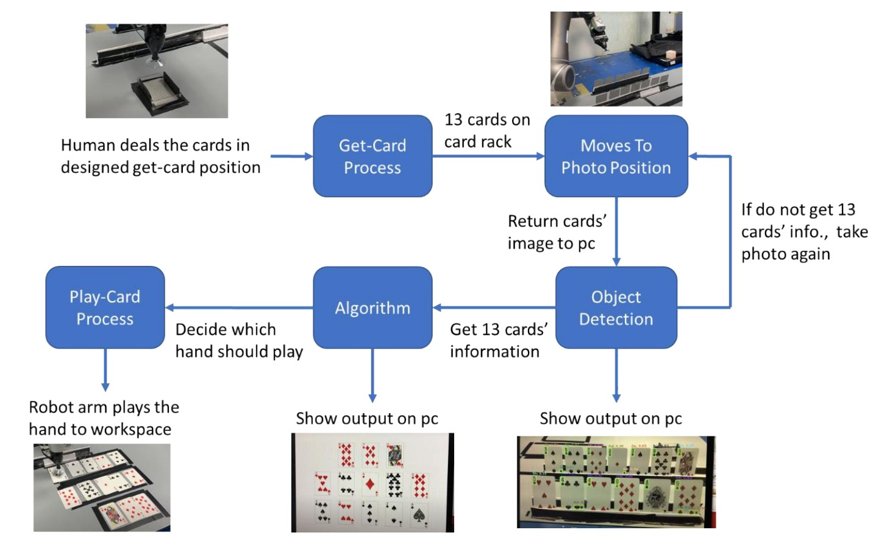

Chinese Poker is a popular card game among the Taiwanese elderly, which typically requires four players to play. However, similar to mahjong, it is common to encounter situations where a fourth player cannot be found, resulting in an inability to play the game.
In order to address this issue, we proposed a robot that can automatically play Chinese Poker using a sucker mechanism to pick up the cards, Yolo v5 for object detection and classification, and our own greedy algorithm for selecting the cards to be played. This allows the robot to perform all actions from dealing to playing cards.
System Overview
 Fig. 1. The overall framework of our system.The overall framework is shown in Fig. 1. Concretely, three human players will deal 13 poker cards to robot arm in designed get-card position. After that, the robot arm will go to the get-card process to put the 13 cards from designed get-card position to the card rack by our designed sucking process. After 13 cards are all on the card rack, the robot arm will move to photo position. The action is trying to get the cards image to computer.
Next, the computer will do the object detection module to get the 13 cards actual suit and number by yolo. If the detection did not get the 13 cards’ information, the robot arm will go back to get the image again. After getting the correct cards’ information, the computer will go to algorithm module to find the best set of hands. The object detection module and the algorithm module’s result will show on the computer to double check. Lastly, the robot arm will do the play-card process to play the hands in order and finish the entire round of Chinese poker card game.
Conclusion
In this paper, we present a robotic system called Chinese Poker Self-Playing Robot. The robot is capable of playing the card game itself. With the sucker mechanism, the robot can suck up the cards from initial card pile and put them on card racks, or play the cards from the card racks. With yolov5 object detection model, the robot can get the correct card information by simply taking a photo of the card racks. With the divide hands algorithm, the robot can determine which card to play. The experiment results show that the robot can get the desired card order and play Chinese Poker card game smoothly. For future work, we can further deal the cards in arbitrary place in the beginning and improve our play card algorithm rather than greedy algorithm to make the system more robustness.
More details are shown in following links:
Final report: link
Source code: link
Demo video: link
Acknowledgment
In this project, I am grateful for lectures by Professor Li-Chen Fu, and my teammates' support and teamwork.